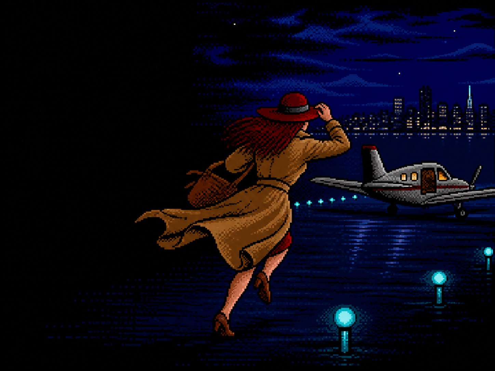
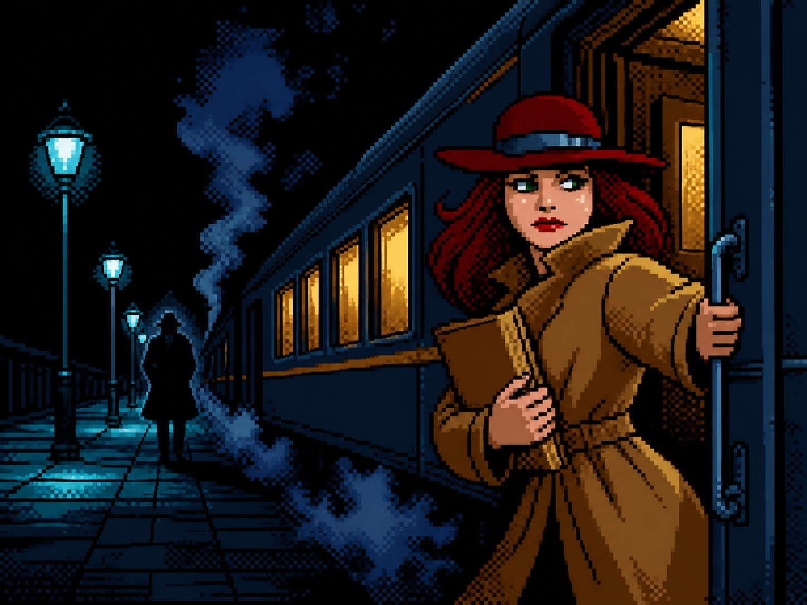
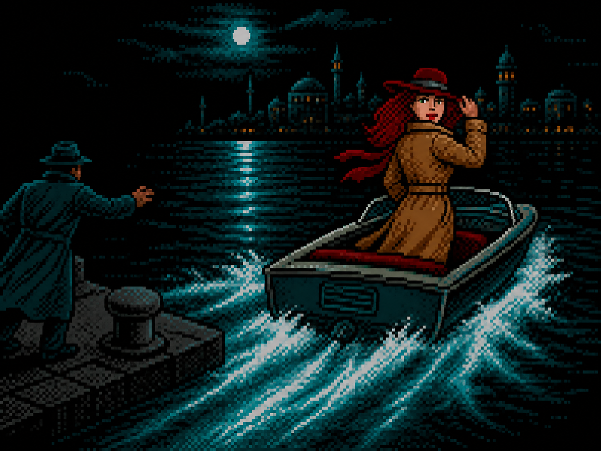
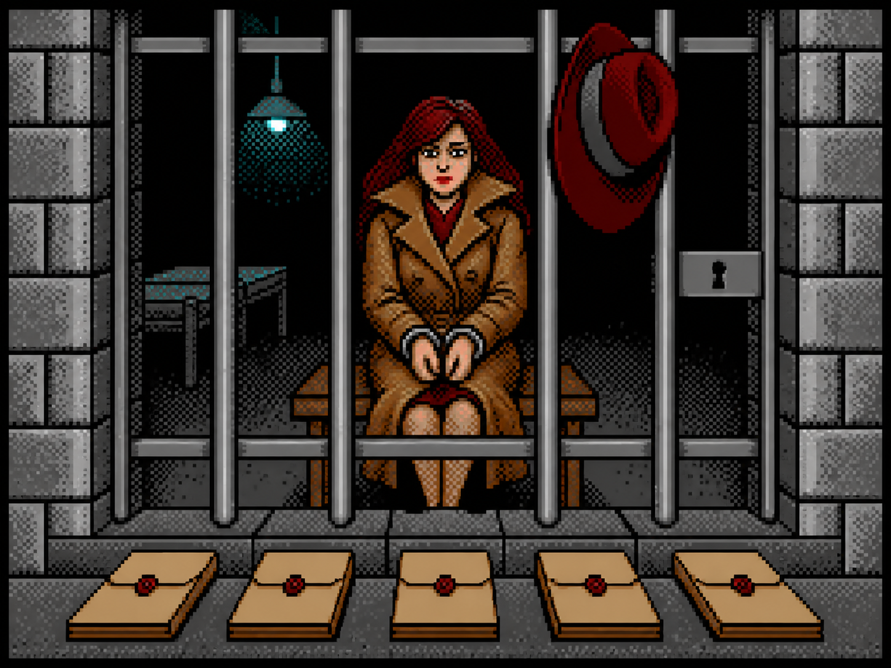
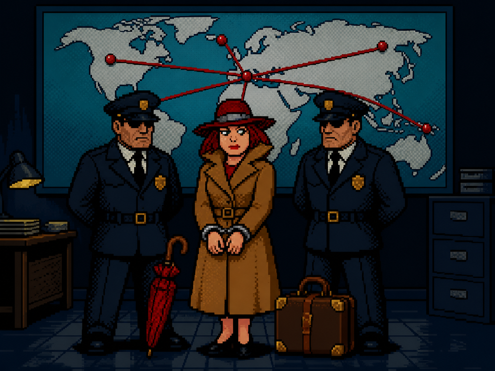
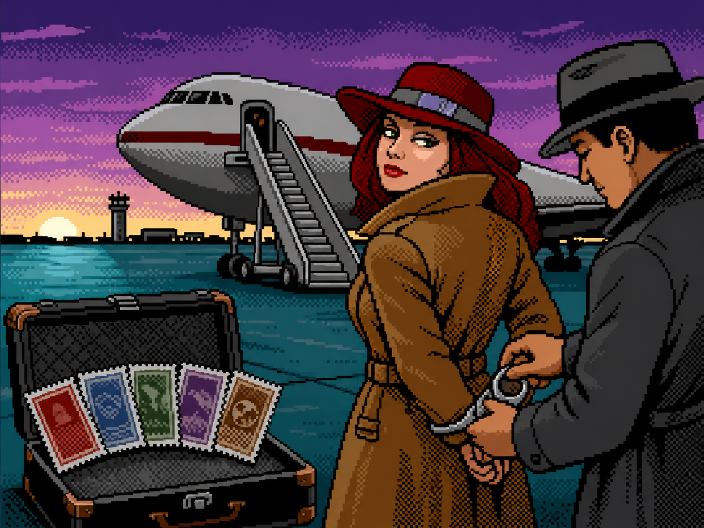
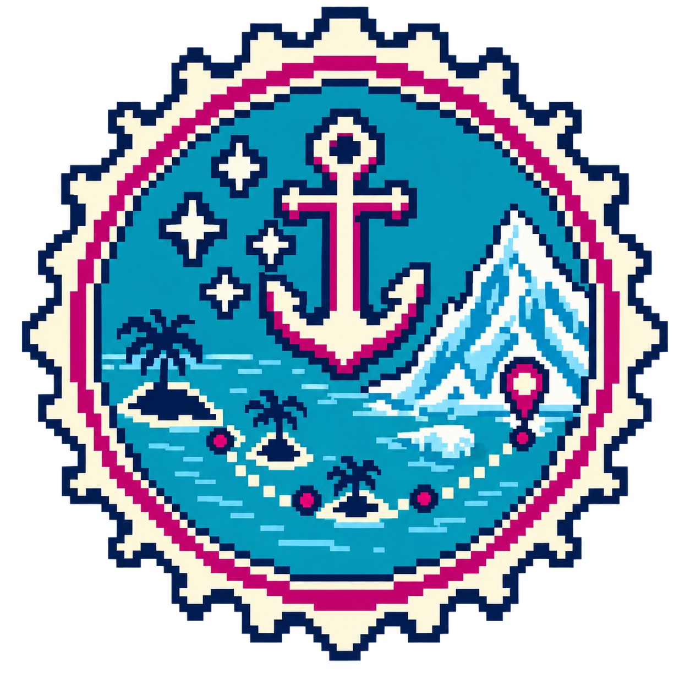

{kind=link}

A · Night runway
Most reusable and geographically neutral. The plane makes international escape immediate; the dark field leaves the UI visually calm.
Asset gate · review before gameplay wiring
The core game art was already complete. The real gap was the paid-campaign story layer: one reusable escape scene, one unique final-capture scene, and five family route stamps. The scenes have three options each because this is a small, high-impact set.
Reusable scene · choose one
Used six times: Case 14, then the Wave 6–10 successor finales. The case report and buttons remain live UI; only the illustration is reused.

Most reusable and geographically neutral. The plane makes international escape immediate; the dark field leaves the UI visually calm.

Best facial continuity with the dossier portrait. More mysterious than kinetic, and slightly more tied to a European setting.

Strongest “one second too late” action beat. The clearest chase, though the harbor makes it less universal than the runway.
Wave 10 only · choose one
This appears once, after all ten masterminds fall. It should feel more conclusive than the ordinary jail result and visibly pay off the global campaign.

Clearest literal capture, with the five family files as payoff. It overlaps most with the game’s ordinary jail-screen language.

Best campaign payoff: Clara, two agents, and every route converging on the evidence map. Distinct from the ordinary result screen.

Strong visual rhyme with escape option A and the five stamps. More cinematic, but less explicitly “the whole network is finished.”
Complete set · one visual system
Each seal marks one fully dismantled family in the campaign Passport/route dossier. Before completion the same asset can render dim and monochrome; after the successor capture it turns full color, so no second bitmap state is needed.

Oceania + Frontiers320 × 200 layout simulation
Use the buttons above to swap candidates here. Text, counters, localization, price, and actions remain Compose UI rather than pixels baked into an image.
Implementation intent
Reusable narrative beat after Case 14 and five late-wave finales. Keeps six reports visually consistent while report copy changes around it.
One-time visual reward after Wave 10. It differentiates the campaign ending from an ordinary suspect arrest and pays off the world-network story.
Persistent collection feedback in Passport/campaign progress. The UI controls locked/unlocked treatment; each family needs only this one transparent PNG.
{kind=link}
{kind=link}
{kind=link}
{kind=link}
{kind=link}